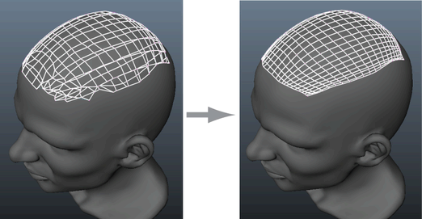

“松弛”(Relax)笔刷可用于抚平曲面上顶点之间的间距，清理通过“四边形绘制”(Quad Draw)工具创建的新拓扑。可以平滑整个曲面，或将松弛运算集中在网格的某个部分。

松弛所有顶点
- 打开四边形绘制(Quad Draw)工具。
- 从“四边形绘制工具”(Quad Draw Tool)标记菜单或“四边形绘制选项”(Quad Draw Options)中选择一个“松弛”(Relax)选项。
- 按 Shift 键并将“松弛”(Relax)笔刷拖至顶点上。
松弛选择的顶点
- 激活“软选择”(Soft Selection)模式（热键：b）
- 将光标移动到要预览衰减区域的网格上方。
- 请执行以下操作：
- 按 Shift 键并单击鼠标中键向右拖动以松弛顶点。
- 按 Shift 键并单击鼠标中键向左拖动以撤消松弛运算。